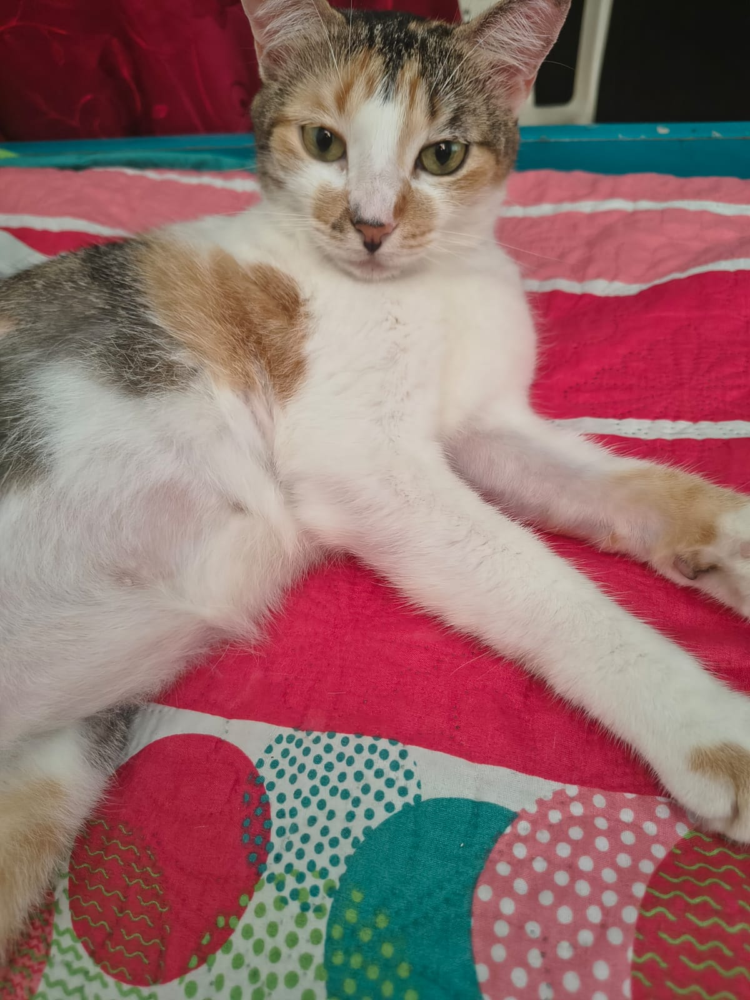
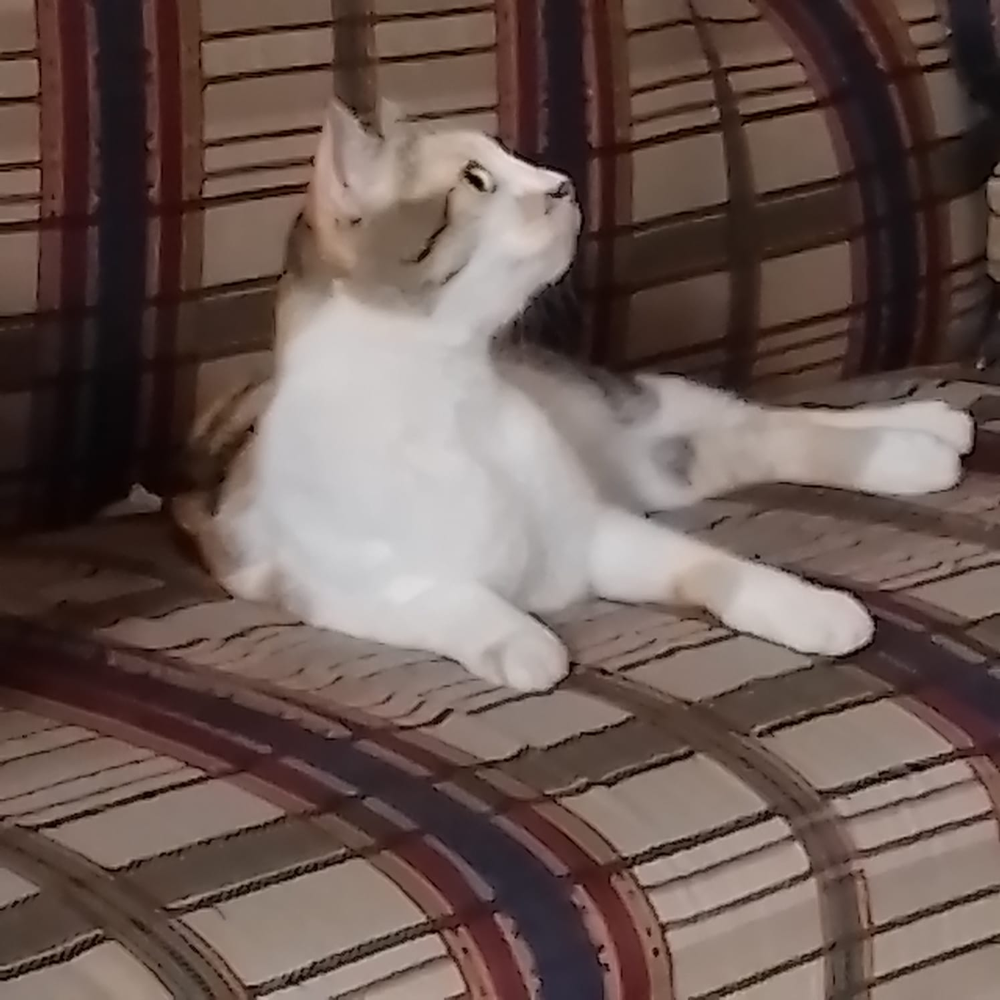
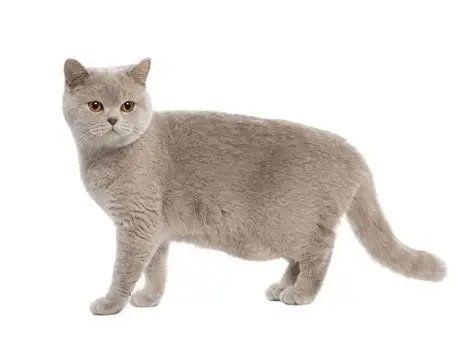
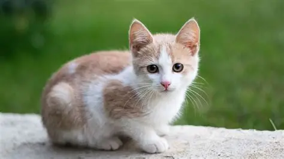
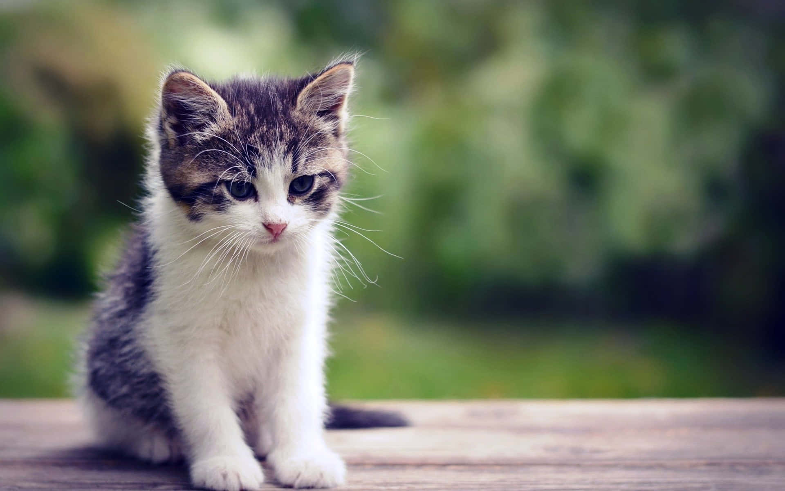

Luna

Es una gatita que come mucho, se la pasa durmiendo y cuando tiene hambre se pone agresiva... lleva con nosotros desde el 2020 y en casa la amamos mucho
Volver al portafolio: Mi portafolio

Es una gatita que come mucho, se la pasa durmiendo y cuando tiene hambre se pone agresiva... lleva con nosotros desde el 2020 y en casa la amamos mucho

Es... alguien más... definitivamente no es Luna. Jejejeje

Un esfinge mágico reencarnado del mismísimo antiguo egipto... pensando y planeando su próximo movimiento y cómo le beneficiará y si le trae problemas o no...

Es un gatito gris que siempre está jugando y haciendo travesuras. Nos ha llenado de alegría desde que nos lo trajeron.

Así probablemente se veía Luna cuando era pequeña.

Es un gatito que siempre está triste y no quiere jugar. Nos ha llenado de ternura con su mirada triste.